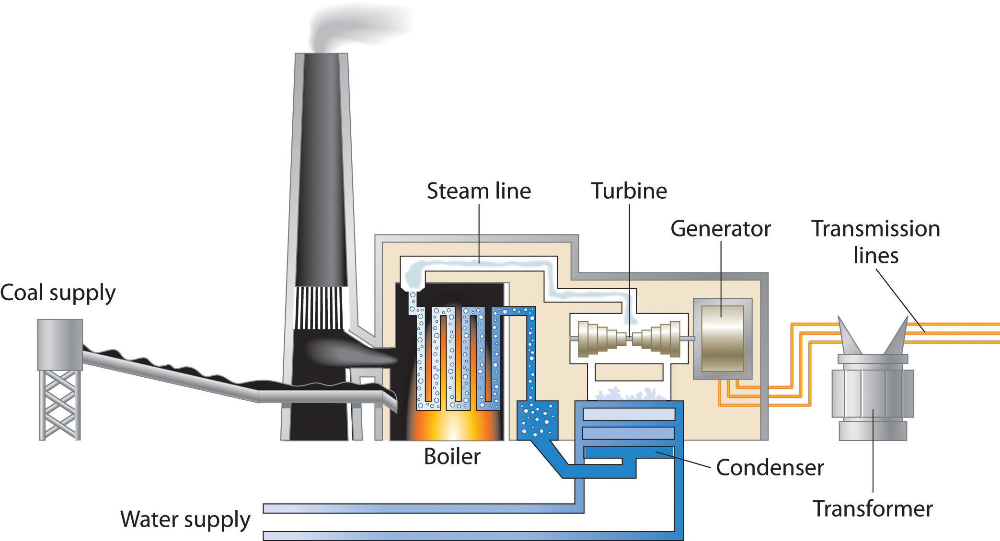
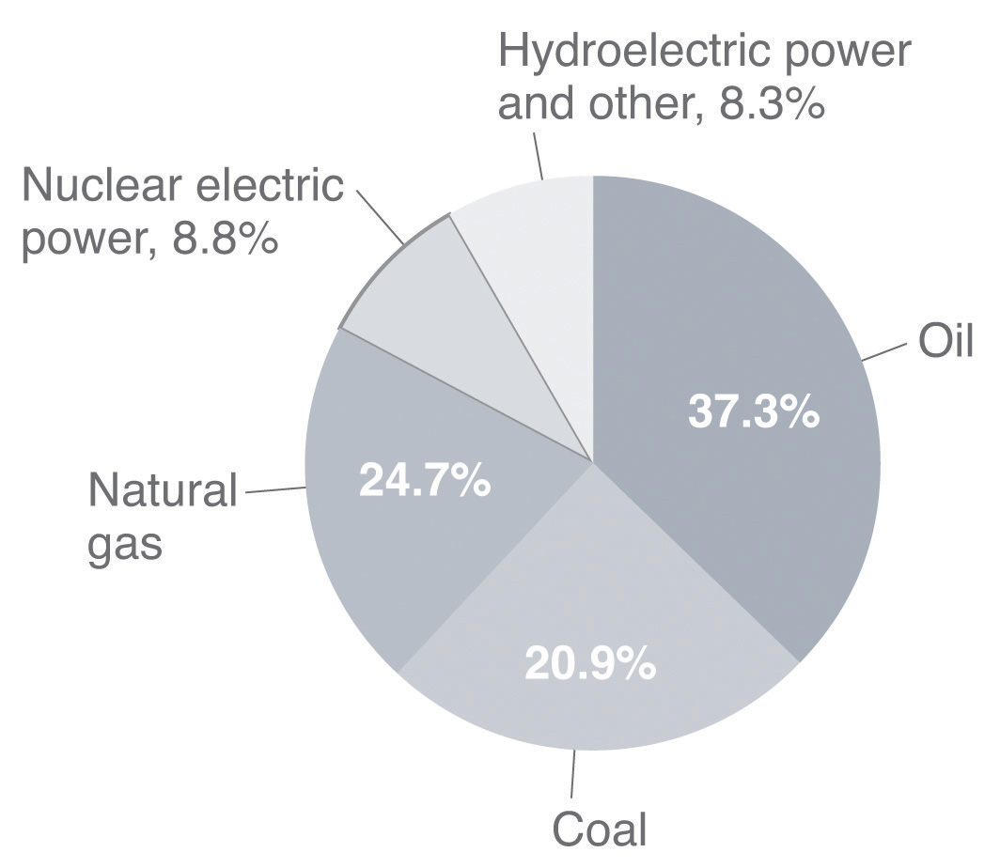
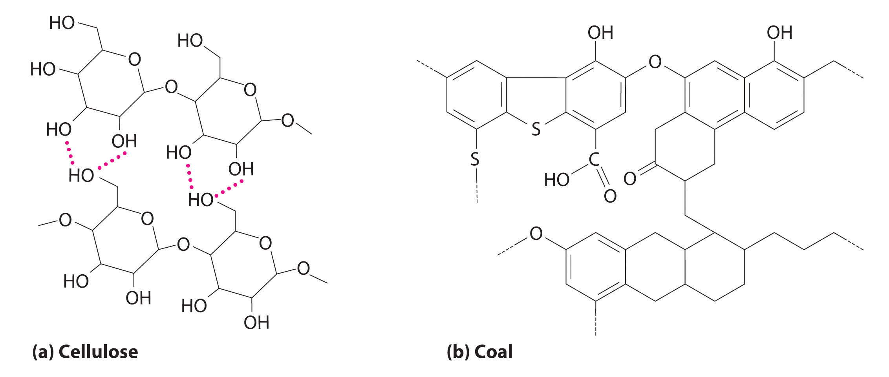
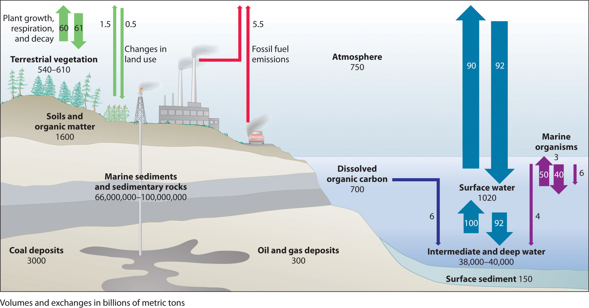
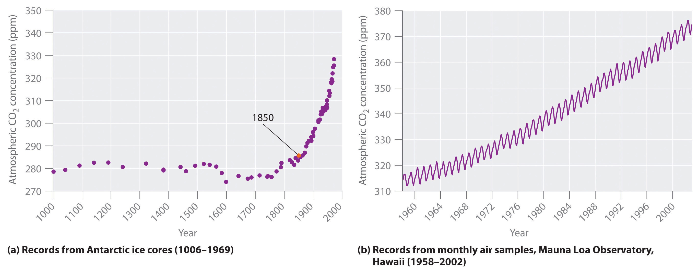
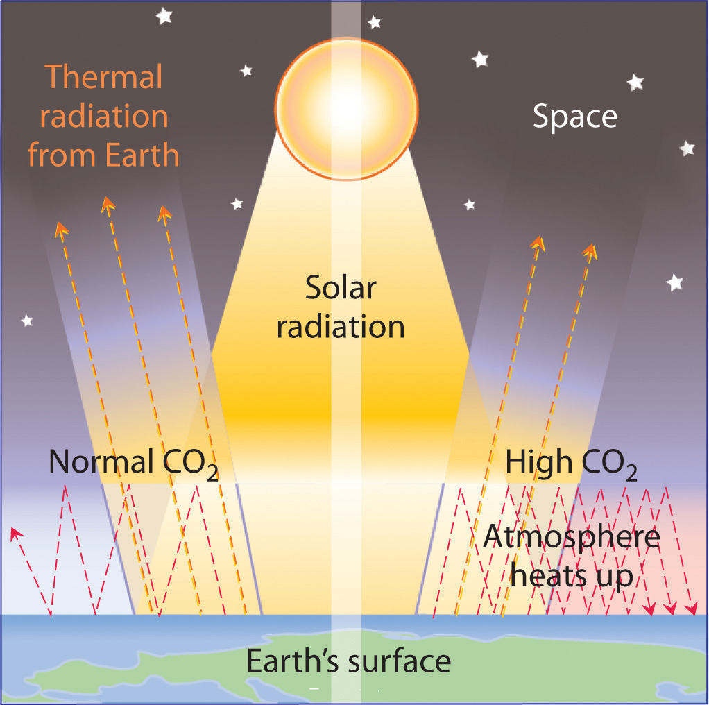
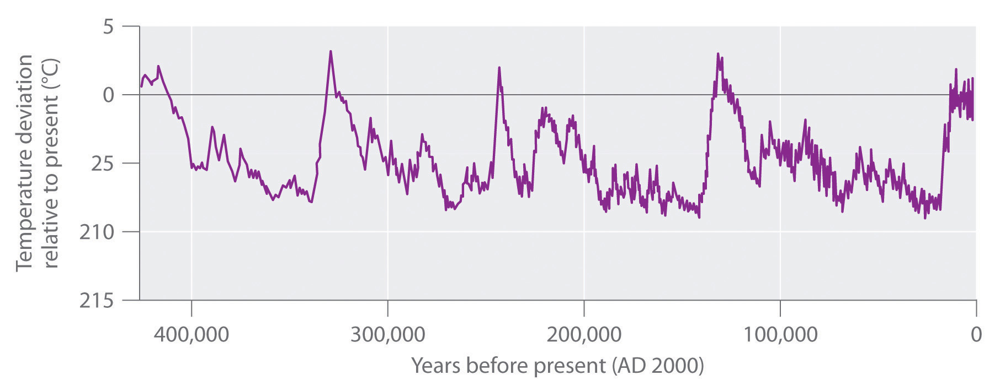

Our contemporary society requires the constant expenditure of huge amounts of energy to heat our homes, provide telephone and cable service, transport us from one location to another, provide light when it is dark outside, and run the machinery that manufactures material goods. The United States alone consumes almost 106 kJ per person per day, which is about 100 times the normal required energy content of the human diet. This figure is about 30% of the world’s total energy usage, although only about 5% of the total population of the world lives in the United States. In contrast, the average energy consumption elsewhere in the world is about 105 kJ per person per day, although actual values vary widely depending on a country’s level of industrialization. In this section, we describe various sources of energy and their impact on the environment.
According to the law of conservation of energy, energy can never actually be “consumed”; it can only be changed from one form to another. What is consumed on a huge scale, however, are resources that can be readily converted to a form of energy that is useful for doing work. As you will see in Chapter 18 "Chemical Thermodynamics", energy that is not used to perform work is either stored as potential energy for future use or transferred to the surroundings as heat.
A major reason for the huge consumption of energy by our society is the low efficiency of most machines in transforming stored energy into work. Efficiency can be defined as the ratio of useful work accomplished to energy expended. Automobiles, for example, are only about 20% efficient in converting the energy stored in gasoline to mechanical work; the rest of the energy is released as heat, either emitted in the exhaust or produced by friction in bearings and tires. The production of electricity by coal- or oil-powered steam turbines is significantly more efficient (Figure 5.17 "Electricity from Coal"): about 38% of the energy released from combustion is converted to electricity. In comparison, modern nuclear power plants can be more than 50% efficient.
Figure 5.17 Electricity from Coal
A coal-powered electric power plant uses the combustion of coal to produce steam, which drives a turbine to produce electricity.
In general, it is more efficient to use primary sources of energy directly (such as natural gas or oil) than to transform them to a secondary source such as electricity prior to their use. For example, if a furnace is well maintained, heating a house with natural gas is about 70% efficient. In contrast, burning the natural gas in a remote power plant, converting it to electricity, transmitting it long distances through wires, and heating the house by electric baseboard heaters have an overall efficiency of less than 35%.
The total expenditure of energy in the world each year is about 3 × 1017 kJ. More than 80% of this energy is provided by the combustion of fossil fuels: oil, coal, and natural gas. (The sources of the energy consumed in the United States in 2009 are shown in Figure 5.18 "Energy Consumption in the United States by Source, 2009".) Natural gas and petroleum, whose compositions were described in Chapter 2 "Molecules, Ions, and Chemical Formulas", are the preferred fuels because they or products derived from them are gases or liquids that are readily transported, stored, and burned. Natural gas and petroleum are derived from the remains of marine creatures that died hundreds of millions of years ago and were buried beneath layers of sediment. As the sediment turned to rock, the tremendous heat and pressure inside Earth transformed the organic components of the buried sea creatures to petroleum and natural gas.
Figure 5.18 Energy Consumption in the United States by Source, 2009
More than 80% of the total energy expended is provided by the combustion of fossil fuels, such as oil, coal, and natural gas.
CoalA complex solid material derived primarily from plants that died and were buried hundreds of millions of years ago and were subsequently subjected to high temperatures and pressures. It is used as a fuel. is a complex solid material derived primarily from plants that died and were buried hundreds of millions of years ago and were subsequently subjected to high temperatures and pressures. Because plants contain large amounts of cellulose, derived from linked glucose units, the structure of coal is more complex than that of petroleum (Figure 5.19 "The Structures of Cellulose and Coal"). In particular, coal contains a large number of oxygen atoms that link parts of the structure together, in addition to the basic framework of carbon–carbon bonds. It is impossible to draw a single structure for coal; however, because of the prevalence of rings of carbon atoms (due to the original high cellulose content), coal is more similar to an aromatic hydrocarbon than an aliphatic one.
Figure 5.19 The Structures of Cellulose and Coal
(a) Cellulose consists of long chains of cyclic glucose molecules linked by hydrogen bonds. (b) When cellulose is subjected to high pressures and temperatures for long periods of time, water is eliminated, and bonds are formed between the rings, eventually producing coal. This drawing shows some of the common structural features of coal; note the presence of many different kinds of ring structures.
There are four distinct classes of coal (Table 5.7 "Properties of Different Types of Coal"); their hydrogen and oxygen contents depend on the length of time the coal has been buried and the pressures and temperatures to which it has been subjected. Lignite, with a hydrogen:carbon ratio of about 1.0 and a high oxygen content, has the lowest ΔHcomb. Anthracite, in contrast, with a hydrogen:carbon ratio of about 0.5 and the lowest oxygen content, has the highest ΔHcomb and is the highest grade of coal. The most abundant form in the United States is bituminous coal, which has a high sulfur content because of the presence of small particles of pyrite (FeS2). As discussed in Chapter 4 "Reactions in Aqueous Solution", the combustion of coal releases the sulfur in FeS2 as SO2, which is a major contributor to acid rain. Table 5.8 "Enthalpies of Combustion of Common Fuels and Selected Organic Compounds" compares the ΔHcomb per gram of oil, natural gas, and coal with those of selected organic compounds.
Table 5.7 Properties of Different Types of Coal
| Type | % Carbon | Hydrogen:Carbon Mole Ratio | % Oxygen | % Sulfur | Heat Content | US Deposits |
|---|---|---|---|---|---|---|
| anthracite | 92 | 0.5 | 3 | 1 | high | Pennsylvania, New York |
| bituminous | 80 | 0.6 | 8 | 5 | medium | Appalachia, Midwest, Utah |
| subbituminous | 77 | 0.9 | 16 | 1 | medium | Rocky Mountains |
| lignite | 71 | 1.0 | 23 | 1 | low | Montana |
Table 5.8 Enthalpies of Combustion of Common Fuels and Selected Organic Compounds
| Fuel | ΔHcomb (kJ/g) |
|---|---|
| dry wood | −15 |
| peat | −20.8 |
| bituminous coal | −28.3 |
| charcoal | −35 |
| kerosene | −37 |
| C6H6 (benzene) | −41.8 |
| crude oil | −43 |
| natural gas | −50 |
| C2H2 (acetylene) | −50.0 |
| CH4 (methane) | −55.5 |
| gasoline | −84 |
| hydrogen | −143 |
Peat, a precursor to coal, is the partially decayed remains of plants that grow in swampy areas. It is removed from the ground in the form of soggy bricks of mud that will not burn until they have been dried. Even though peat is a smoky, poor-burning fuel that gives off relatively little heat, humans have burned it since ancient times (Figure 5.20 "A Peat Bog"). If a peat bog were buried under many layers of sediment for a few million years, the peat could eventually be compressed and heated enough to become lignite, the lowest grade of coal; given enough time and heat, lignite would eventually become anthracite, a much better fuel.
Figure 5.20 A Peat Bog
Peat is a smoky fuel that burns poorly and produces little heat, but it has been used as a fuel since ancient times.
Oil and natural gas resources are limited. Current estimates suggest that the known reserves of petroleum will be exhausted in about 60 years, and supplies of natural gas are estimated to run out in about 120 years. Coal, on the other hand, is relatively abundant, making up more than 90% of the world’s fossil fuel reserves. As a solid, coal is much more difficult to mine and ship than petroleum (a liquid) or natural gas. Consequently, more than 75% of the coal produced each year is simply burned in power plants to produce electricity. A great deal of current research focuses on developing methods to convert coal to gaseous fuels (coal gasification) or liquid fuels (coal liquefaction). In the most common approach to coal gasification, coal reacts with steam to produce a mixture of CO and H2 known as synthesis gas, or syngas:Because coal is 70%–90% carbon by mass, it is approximated as C in Equation 5.46.
Equation 5.46
Converting coal to syngas removes any sulfur present and produces a clean-burning mixture of gases.
Syngas is also used as a reactant to produce methane and methanol. A promising approach is to convert coal directly to methane through a series of reactions:
Equation 5.47
Burning a small amount of coal or methane provides the energy consumed by these reactions. Unfortunately, methane produced by this process is currently significantly more expensive than natural gas. As supplies of natural gas become depleted, however, this coal-based process may well become competitive in cost.
Measuring crude oil. The standard industrial unit of measure for crude oil is the 42 gal barrel.
Similarly, the techniques available for converting coal to liquid fuels are not yet economically competitive with the production of liquid fuels from petroleum. Current approaches to coal liquefaction use a catalyst to break the complex network structure of coal into more manageable fragments. The products are then treated with hydrogen (from syngas or other sources) under high pressure to produce a liquid more like petroleum. Subsequent distillation, cracking, and reforming can be used to create products similar to those obtained from petroleum. (For more information about cracking, see Chapter 2 "Molecules, Ions, and Chemical Formulas", Section 2.6 "Industrially Important Chemicals".) The total yield of liquid fuels is about 5.5 bbl of crude liquid per ton of coal (1 bbl is 42 gal or 160 L). Although the economics of coal liquefaction are currently even less attractive than for coal gasification, liquid fuels based on coal are likely to become economically competitive as supplies of petroleum are consumed.
If bituminous coal is converted to methane by the process in Equation 5.46, what is the ratio of the ΔHcomb of the methane produced to the enthalpy of the coal consumed to produce the methane? (Note that 1 mol of CH4 is produced for every 2 mol of carbon in coal.)
Given: chemical reaction and ΔHcomb (Table 5.8 "Enthalpies of Combustion of Common Fuels and Selected Organic Compounds")
Asked for: ratio of ΔHcomb of methane produced to coal consumed
Strategy:
A Write a balanced chemical equation for the conversion of coal to methane. Referring to Table 5.8 "Enthalpies of Combustion of Common Fuels and Selected Organic Compounds", calculate the ΔHcomb of methane and carbon.
B Calculate the ratio of the energy released by combustion of the methane to the energy released by combustion of the carbon.
Solution:
A The balanced chemical equation for the conversion of coal to methane is as follows:
2C(s) + 2H2O(g) → CH4(g) + CO2(g)Thus 1 mol of methane is produced for every 2 mol of carbon consumed. The ΔHcomb of 1 mol of methane is
The ΔHcomb of 2 mol of carbon (as coal) is
B The ratio of the energy released from the combustion of methane to the energy released from the combustion of carbon is
The energy released from the combustion of the product (methane) is 131% of that of the reactant (coal). The fuel value of coal is actually increased by the process!
How is this possible when the law of conservation of energy states that energy cannot be created? The reaction consumes 2 mol of water () but produces only 1 mol of CO2 (). Part of the difference in potential energy between the two (approximately 180 kJ/mol) is stored in CH4 and can be released during combustion.
Exercise
Using the data in Table 5.8 "Enthalpies of Combustion of Common Fuels and Selected Organic Compounds", calculate the mass of hydrogen necessary to provide as much energy during combustion as 1 bbl of crude oil (density approximately 0.75 g/mL).
Answer: 36 kg
Even if carbon-based fuels could be burned with 100% efficiency, producing only CO2(g) and H2O(g), doing so could still potentially damage the environment when carried out on the vast scale required by an industrial society. The amount of CO2 released is so large and is increasing so rapidly that it is apparently overwhelming the natural ability of the planet to remove CO2 from the atmosphere. In turn, the elevated levels of CO2 are thought to be affecting the temperature of the planet through a mechanism known as the greenhouse effectThe phenomenon in which substances absorb thermal energy radiated by Earth, thus trapping thermal energy in the atmosphere.. As you will see, there is little doubt that atmospheric CO2 levels are increasing, and the major reason for this increase is the combustion of fossil fuels. There is substantially less agreement, however, on whether the increased CO2 levels are responsible for a significant increase in temperature.
Figure 5.21 "The Global Carbon Cycle" illustrates the global carbon cycleThe distribution and flow of carbon throughout the planet., the distribution and flow of carbon on Earth. Normally, the fate of atmospheric CO2 is to either (1) dissolve in the oceans and eventually precipitate as carbonate rocks or (2) be taken up by plants. The rate of uptake of CO2 by the ocean is limited by its surface area and the rate at which gases dissolve, which are approximately constant. The rate of uptake of CO2 by plants, representing about 60 billion metric tons of carbon per year, partly depends on how much of Earth’s surface is covered by vegetation. Unfortunately, the rapid deforestation for agriculture is reducing the overall amount of vegetation, and about 60 billion metric tons of carbon are released annually as CO2 from animal respiration and plant decay. The amount of carbon released as CO2 every year by fossil fuel combustion is estimated to be about 5.5 billion metric tons. The net result is a system that is slightly out of balance, experiencing a slow but steady increase in atmospheric CO2 levels (Figure 5.22 "Changes in Atmospheric CO"). As a result, average CO2 levels have increased by about 30% since 1850.
Figure 5.21 The Global Carbon Cycle
Most of Earth’s carbon is found in the crust, where it is stored as calcium and magnesium carbonate in sedimentary rocks. The oceans also contain a large reservoir of carbon, primarily as the bicarbonate ion (HCO3−). Green plants consume about 60 billion metric tons of carbon per year as CO2 during photosynthesis, and about the same amount of carbon is released as CO2 annually from animal and plant respiration and decay. The combustion of fossil fuels releases about 5.5 billion metric tons of carbon per year as CO2.
Figure 5.22 Changes in Atmospheric CO2 Levels
(a) Average worldwide CO2 levels have increased by about 30% since 1850. (b) Atmospheric CO2 concentrations measured at Mauna Loa in Hawaii show seasonal variations caused by the removal of CO2 from the atmosphere by green plants during the growing season along with a general increase in CO2 levels.
The increasing levels of atmospheric CO2 are of concern because CO2 absorbs thermal energy radiated by the Earth, as do other gases such as water vapor, methane, and chlorofluorocarbons. Collectively, these substances are called greenhouse gasesA substance that absorbs thermal energy radiated by Earth, thus trapping thermal energy in the atmosphere.; they mimic the effect of a greenhouse by trapping thermal energy in the Earth’s atmosphere, a phenomenon known as the greenhouse effect (Figure 5.23 "The Greenhouse Effect").
Figure 5.23 The Greenhouse Effect
Thermal energy can be trapped in Earth’s atmosphere by gases such as CO2, water vapor, methane, and chlorofluorocarbons before it can be radiated into space—like the effect of a greenhouse. It is not yet clear how large an increase in the temperature of Earth’s surface can be attributed to this phenomenon.
Venus is an example of a planet that has a runaway greenhouse effect. The atmosphere of Venus is about 95 times denser than that of Earth and contains about 95% CO2. Because Venus is closer to the sun, it also receives more solar radiation than Earth does. The result of increased solar radiation and high CO2 levels is an average surface temperature of about 450°C, which is hot enough to melt lead.
Data such as those in Figure 5.22 "Changes in Atmospheric CO" indicate that atmospheric levels of greenhouse gases have increased dramatically over the past 100 years, and it seems clear that the heavy use of fossil fuels by industry is largely responsible. It is not clear, however, how large an increase in temperature (global warming) may result from a continued increase in the levels of these gases. Estimates of the effects of doubling the preindustrial levels of CO2 range from a 0°C to a 4.5°C increase in the average temperature of Earth’s surface, which is currently about 14.4°C. Even small increases, however, could cause major perturbations in our planet’s delicately balanced systems. For example, an increase of 5°C in Earth’s average surface temperature could cause extensive melting of glaciers and the Antarctic ice cap. It has been suggested that the resulting rise in sea levels could flood highly populated coastal areas, such as New York City, Calcutta, Tokyo, Rio de Janeiro, and Sydney. An analysis conducted in 2009 by leading climate researchers from the US National Oceanic and Atmospheric Administration, Switzerland, and France shows that CO2 in the atmosphere will remain near peak levels far longer than other greenhouse gases, which dissipate more quickly. The study predicts a rise in sea levels of approximately 3 ft by the year 3000, excluding the rise from melting glaciers and polar ice caps. According to the analysis, southwestern North America, the Mediterranean, and southern Africa are projected to face droughts comparable to that of the Dust Bowl of the 1930s as a result of global climate changes.
The increase in CO2 levels is only one of many trends that can affect Earth’s temperature. In fact, geologic evidence shows that the average temperature of Earth has fluctuated significantly over the past 400,000 years, with a series of glacial periods (during which the temperature was 10°C–15°C lower than it is now and large glaciers covered much of the globe) interspersed with relatively short, warm interglacial periods (Figure 5.24 "Average Surface Temperature of Earth over the Past 400,000 Years"). Although average temperatures appear to have increased by 0.5°C in the last century, the statistical significance of this increase is open to question, as is the existence of a cause-and-effect relationship between the temperature change and CO2 levels. Despite the lack of incontrovertible scientific evidence, however, many people believe that we should take steps now to limit CO2 emissions and explore alternative sources of energy, such as solar energy, geothermal energy from volcanic steam, and nuclear energy, to avoid even the possibility of creating major perturbations in Earth’s environment. In 2010, international delegates met in Cancún, Mexico, and agreed on a broad array of measures that would advance climate protection. These included the development of low-carbon technologies, providing a framework to reduce deforestation, and aiding countries in assessing their own vulnerabilities. They avoided, however, contentious issues of assigning emissions reductions commitments.
Figure 5.24 Average Surface Temperature of Earth over the Past 400,000 Years
The dips correspond to glacial periods, and the peaks correspond to relatively short, warm interglacial periods. Because of these fluctuations, the statistical significance of the 0.5°C increase in average temperatures observed in the last century is open to question.
A student at UCLA decided to fly home to New York for Christmas. The round trip was 4500 air miles, and part of the cost of her ticket went to buy the 100 gal of jet fuel necessary to transport her and her baggage. Assuming that jet fuel is primarily n-dodecane (C12H26) with a density of 0.75 g/mL, how much energy was expended and how many tons of CO2 were emitted into the upper atmosphere to get her home and back?
Given: volume and density of reactant in combustion reaction
Asked for: energy expended and mass of CO2 emitted
Strategy:
A After writing a balanced chemical equation for the reaction, calculate using Equation 5.27 and the values given in Chapter 25 "Appendix A: Standard Thermodynamic Quantities for Chemical Substances at 25°C".
B Determine the number of moles of dodecane in 100 gal by using the density and molar mass of dodecane and the appropriate conversion factors.
C Obtain the amount of energy expended by multiplying by the number of moles of dodecane. Calculate the amount of CO2 emitted in tons by using mole ratios from the balanced chemical equation and the appropriate conversion factors.
Solution:
A We first need to write a balanced chemical equation for the reaction:
2C12H26(l) + 37O2(g) → 24CO2(g) + 26H2O(l)We can calculate for this reaction from Equation 5.27 and the values in Chapter 25 "Appendix A: Standard Thermodynamic Quantities for Chemical Substances at 25°C" corresponding to each substance in the specified phase (phases are not shown for simplicity):
According to the balanced chemical equation for the reaction, this value is for the combustion of 2 mol of n-dodecane. So we must divide by 2 to obtain per mole of n-dodecane:
B The number of moles of dodecane in 100 gal can be calculated as follows, using density, molar mass, and appropriate conversion factors:
C The total energy released is
From the balanced chemical equation for the reaction, we see that each mole of dodecane forms 12 mol of CO2 upon combustion. Hence the amount of CO2 emitted is
Exercise
Suppose the student in Example 14 couldn’t afford the plane fare, so she decided to drive home instead. Assume that the round-trip distance by road was 5572 miles, her fuel consumption averaged 31 mpg, and her fuel was pure isooctane (C8H18, density = 0.6919 g/mL). How much energy was expended and how many tons of CO2 were produced during her trip?
Answer: 2.2 × 107 kJ; 1.6 tons of CO2 (about twice as much as is released by flying)
More than 80% of the energy used by modern society (about 3 × 1017 kJ/yr) is from the combustion of fossil fuels. Because of their availability, ease of transport, and facile conversion to convenient fuels, natural gas and petroleum are currently the preferred fuels. Supplies of coal, a complex solid material derived from plants that lived long ago, are much greater, but the difficulty in transporting and burning a solid makes it less attractive as a fuel. Coal releases the smallest amount of energy per gram of any fossil fuel, and natural gas the greatest amount. The combustion of fossil fuels releases large amounts of CO2 that upset the balance of the carbon cycle and result in a steady increase in atmospheric CO2 levels. Because CO2 is a greenhouse gas, which absorbs heat before it can be radiated from Earth into space, CO2 in the atmosphere can result in increased surface temperatures (the greenhouse effect). The temperature increases caused by increased CO2 levels because of human activities are, however, superimposed on much larger variations in Earth’s temperature that have produced phenomena such as the ice ages and are still poorly understood.
Why is it preferable to convert coal to syngas before use rather than burning coal as a solid fuel?
What is meant by the term greenhouse gases? List three greenhouse gases that have been implicated in global warming.
Name three factors that determine the rate of planetary CO2 uptake.
The structure of coal is quite different from the structure of gasoline. How do their structural differences affect their enthalpies of combustion? Explain your answer.
Please be sure you are familiar with the topics discussed in Essential Skills 4 (Section 5.6 "Essential Skills 4") before proceeding to the Numerical Problems.
One of the side reactions that occurs during the burning of fossil fuels is
4FeS2(s) + 11O2(g) → 2Fe2O3(s) + 8SO2(g)How many kilograms of CO2 are released during the combustion of 16 gal of gasoline? Assume that gasoline is pure isooctane with a density of 0.6919 g/mL. If this combustion was used to heat 4.5 × 103 L of water from an initial temperature of 11.0°C, what would be the final temperature of the water assuming 42% efficiency in the energy transfer?
A 60 W light bulb is burned for 6 hours. If we assume an efficiency of 38% in the conversion of energy from oil to electricity, how much oil must be consumed to supply the electrical energy needed to light the bulb? (1 W = 1 J/s)
How many liters of cyclohexane must be burned to release as much energy as burning 10.0 lb of pine logs? The density of cyclohexane is 0.7785 g/mL, and its ΔHcomb = −46.6 kJ/g.